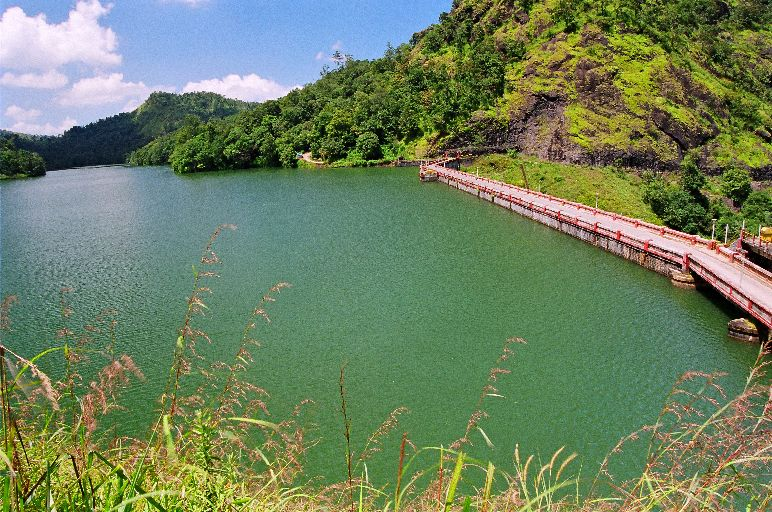
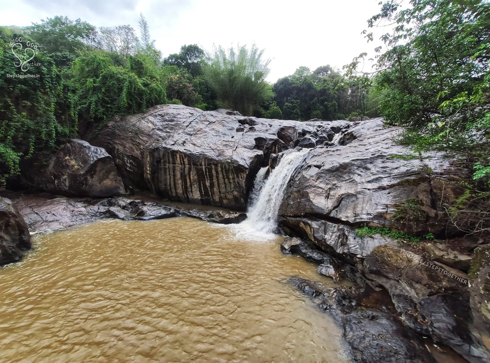
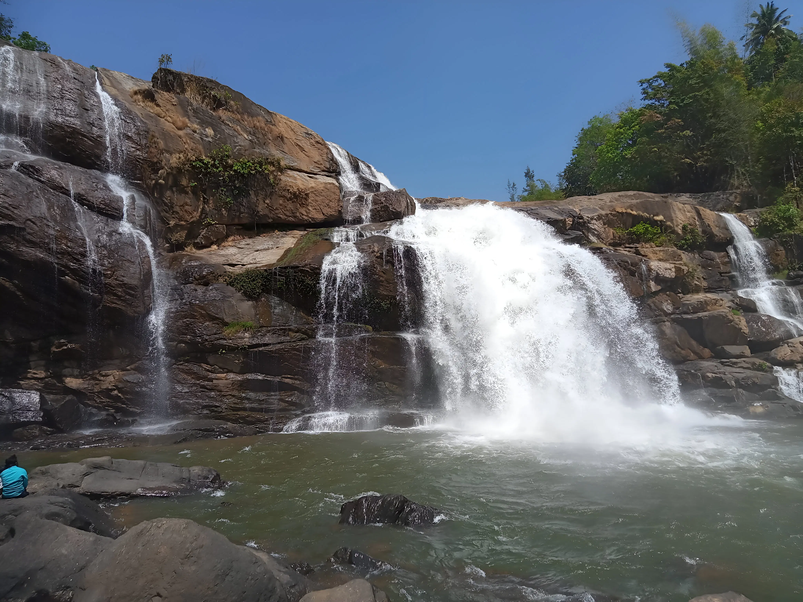

Nearest Sights

Ponmudi Dam
Ponmudi Dam in Idukki is a beautiful spot, surrounded by nature in Ponmudi.
Distance : 3 km

Ripple Waterfalls
Ripple Waterfalls at Sree Narayanapuram .
Distance : 7.1 km
Kuthungal Waterfalls
Kuthumkal Waterfalls is charming waterfall located in Kuthumkal.
Distance : 3.8km

Nadukani
Spot with breathtaking views of the surrounding hills and valleys.
Distance : 5km

Chunayammakkal Waterfalls
Chunayammakkal Waterfalls is one of the biggest waterfalls in Idukki district
Distance : 7km

Kattoothi View point
It offers a stunning panoramic view of the surrounding valleys and hills
Distance : 16km
Swargam Medu
Swargam medu is a beautiful hilltop located in senapathy.
Distance : 12.8km